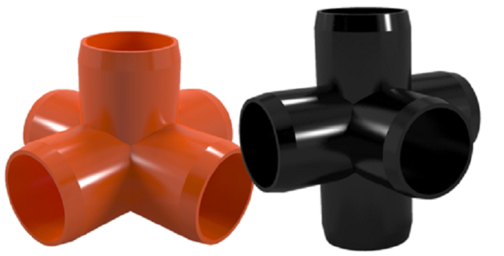

Use Formufits Connectors to Build with PVC Pipe

PVC Pipe is cheap and easy to get your hands on, the only problem in making experimental apparatus with PVC as the frame is that it's generally meant for plumbing and so has limited connectors. Formufit fixes this problem by offering connectors, some which are adjustable, that effectively turn PVC Pipes into a lego set.